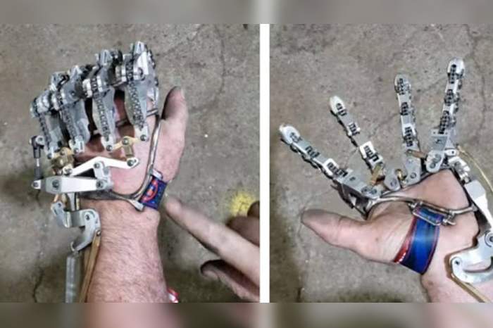

Mecánica
Dispositivo que permite a las personas abrir y cerrar sus manos de forma voluntaria.
Dispositivo que permite a las personas abrir y cerrar sus manos de forma voluntaria.
Las prótesis estéticas son dispositivos que se usan para mejorar la apariencia de una parte del cuerpo, ya sea la boca, el rostro o un miembro.
Dispositivos que imitan los movimientos naturales del cuerpo humano y están diseñadas con tecnologías de última generación.
Una prótesis que va con tu estilo de vida.